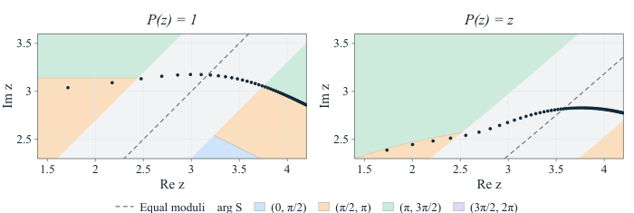

A supplementary Lean 4 project machine-checks Proposition 3.1, Corollary 3.8, and several lemmas, with a coverage table mapping statements to Lean declarations.
Abstract
We study the zeros of solutions of complex linear differential equations of arbitrary order $n\ge2$ with exponential-sum coefficients. Using the initial-value space $\mathbb{C}^n$ to parametrize the solutions, we show that solutions with initial vectors outside a complete pluripolar cone of Lebesgue measure zero share an explicit common leading term for the global zero count and a common joint limit in radius and angle. The rescaled radial distance from the disk boundary has an exponential limiting distribution, while the rescaled angular deviations from each main ray are Gaussian. Inspired by logarithmic tracts in the Eremenko-Lyubich class $\mathcal{B}$, we pull exterior sectors back conformally to countably many curvilinear strips extending in finitely many directions and obtain zero-counting asymptotics in each strip, although the coefficients may lie outside this class. Moreover, the asymptotic formula for the global zero count and the joint limit in radius and angle persist under arbitrary entire perturbations of strictly smaller weighted exponential type.
Problem
The paper studies how the zeros of solutions to complex linear differential equations of order n≥2 with exponential-sum coefficients depend on the initial values. The goal is to describe the global zero distribution of solutions with generic initial values.
Approach
Solutions are parametrized by their initial vectors in C^n. Exterior sectors are pulled back conformally to curvilinear strips, where the equation tends to a constant-coefficient equation, and sectorial zero counts are transferred to these strips. Weak limits of rescaled log-norms of the fundamental solutions are combined with pluripotential theory to identify an exceptional cone of initial values. A partial Lean 4 formalization machine-checks several of the key lemmas and propositions.
Results
Outside a complete pluripolar cone of Lebesgue measure zero, every solution satisfies n(r,1/f) C r^{β*+1/2} e^{ar} and has a common joint limit in radius and angle. The rescaled radial distance from the disk boundary has an exponential limiting distribution, and the angular deviations from each main ray are Gaussian. These asymptotics persist under entire perturbations of strictly smaller weighted exponential type.

Figure 8. Computed zeros near the change of dominant frequency.